가스기사 (2022-03-05 기출문제)
1과목: 가스유체역학
1. 관 내부에서 유체가 흐를 때 흐름이 완전난류라면 수두손실은 어떻게 되겠는가?
- 대략적으로 속도의 제곱에 반비례한다.
- 대략적으로 직경의 제곱에 반비례하고 속도에 정비례한다.
- 대략적으로 속도의 제곱에 비례한다.
- 대략적으로 속도에 정비례한다.
(정답률: 59%)

2. 다음 중 정상유동과 관계있는 식은? (단, V = 속도벡터, s = 임의방향좌표, t = 시간이다.)
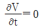
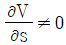
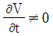
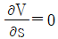
(정답률: 54%)
3. 물이 23m/s의 속도로 노즐에서 수직상방으로 분사될 때 손실을 무시하면 약 몇 m 까지 물이 상승하는가?
- 13
- 20
- 27
- 54
(정답률: 45%)
4. 기체가 0.1kg/s 로 직경 40cm인 관내부를 등온으로 흐를 때 압력이 30kgf/m2abs, R = 20kgf·m/kg·K, T = 27℃ 라면 평균속도는 몇 m/s 인가?
- 5.6
- 67.2
- 98.7
- 159.2
(정답률: 26%)
5. 내경 0.⑤26m 인 철관 내를 점도가 0.01kg/m·s 이고 밀도가 1200kg/m3 인 액체가 1.16m/s 의 평균속도로 흐를 때 Reynolds 수는 약 얼마인가?
- 36.61
- 3661
- 732.2
- 7322
(정답률: 42%)
6. 어떤 유체의 비중량이 20 kN/m3 이고 점성계수가 0.1N·s/m2 이다. 동점성계수는 m2/s 단위로 얼마인가?
- 2.0×10-2
- 4.9×10-2
- 2.0×10-5
- 4.9×10-5
(정답률: 30%)
7. 성능이 동일한 n e의 펌프를 서로 병렬로 연결하고 원래와 같은 양정에서 작동시킬 때 유체의 토출량은?
- 1/n로 감소한다.
- n배로 증가한다.
- 원래와 동일하다.
- 1/2n로 감소한다.
(정답률: 52%)
8. 직각좌표계 상에서 Euler 기술법으로 유동을 기술할 때
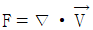
,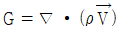
로 정의되는 두 함수에 대한 설명 중 틀린 것은? (단,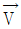
유체의 속도, ρ는 유체의 밀도를 나타낸다.)- 밀도가 일정한 유체의 정상유동(steady flow)에서는 F = 0 이다.
- 압축성(compressible)유체의 정상유동(steady flow)에서는 G = 0이다.
- 밀도가 일정한 유체의 비정상유동(unsteady flow)에서는 F ≠ 0 이다.
- 압축성(compressible) 유체의 비정상유동(unsteady flow)에서는 G≠0 이다.
(정답률: 29%)
9. 하수 슬러리(slurry)와 같이 일정한 온도와 압력 조건에서 임계 전단응력 이상이 되어야만 흐르는 유체는?
- 뉴턴유체(Newtonian fluid)
- 팽창유체(Dilatant fluid)
- 빙햄가소성유체(Bingham plastics fluid)
- 의가소성유체(Pseudoplastic fluid)
(정답률: 42%)
10. 1차원 유동에서 수직충격파가 발생하게 되면 어떻게 되는가?
- 속도, 압력, 밀도가 증가한다.
- 압력, 밀도, 온도가 증가한다.
- 속도, 온도, 밀도가 증가한다.
- 압력은 감소하고 엔트로피가 일정하게 된다.
(정답률: 48%)
11. 유체 수송장치의 캐비테이션 방지 대책으로 옳은 것은?
- 펌프의 설치 위치를 높인다.
- 펌프의 회전수를 크게 한다.
- 흡입관 지름을 크게 한다.
- 양 흡입을 단 흡입으로 바꾼다.
(정답률: 52%)
12. 내경 5cm 파이프 내에서 비압축성 유체의 평균유속이 5m/s 이면 내경을 2.5cm 로 축소하였을 때의 평균유속은?
- 5m/s
- 10m/s
- 20m/s
- 50m/s
(정답률: 42%)
13. 잠겨있는 물체에 작용하는 부력은 물체가 밀어낸 액체의 무게와 같다고 하는 원리(법칙)와 관련 있는 것은?
- 뉴턴의 점성법칙
- 아르키메데스 원리
- 하겐-포와젤 원리
- 맥레오드 원리
(정답률: 59%)
14. 온도 To = 300K, Mach 수 M = 0.8 인 1차원 공기 유동의 정체온도(stahnation temperature)는 약 몇 K 인가? (단, 공기는 이상기체이며, 등엔트로피 유동이고 비열비 k는 1.4 이다.)
- 324
- 338
- 346
- 364
(정답률: 28%)
15. 질량보존의 법칙을 유체유동에 적용한 방정식은?
- 오일러 방정식
- 달시 방정식
- 운동량 방정식
- 연속 방정식
(정답률: 52%)
16. 100kPa, 25℃에 있는 이상기체를 등엔트로피 과정으로 135kPa 까지 압축하였다. 압축 후의 온도는 약 몇 ℃ 인가? (단, 이 기체의 정압비열 CP 는 1.213 kJ/kg·K 이고 정적비열은 CV는 0.821 kJ/kg·K 이다.)
- 45.5
- 55.5
- 65.5
- 75.5
(정답률: 36%)
17. 이상기체에서 정압비열을 CP, 정적비열을 CV로 표시할 때 비엔탈피의 변화 dh는 어떻게 표시되는가?
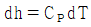
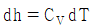
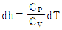
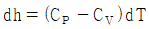
(정답률: 31%)
18. 지름이 0.1m 인 관에 유체가 흐르고 있다. 임계 레이놀즈가 2100이고, 이에 대응하는 임계유속이 0.25m/s 이다. 이 유체의 동점성계수는 약 몇 cm2/s 인가?
- 0.095
- 0.119
- 0.354
- 0.454
(정답률: 44%)
19. 그림에서와 같이 파이프내로 비압축성 유체가 층류로 흐르고 있다. A점에서의 유속이 1m/s 라면 R점에서의 유속은 몇 m/s 인가? (단, 관의 직경은 10cm 이다.)
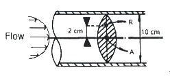
- 0.36
- 0.60
- 0.84
- 1.00
(정답률: 31%)
20. 공기 중의 음속 C는
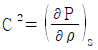
로 주어진다. 이 때 음속과 온도의 관계는? (단, T는 주위 공기의 절대온도이다.)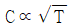
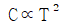
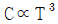
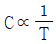
(정답률: 44%)
2과목: 연소공학
21. 위험장소의 등급분류 중 2종 장소에 해당하지 않는 것은?
- 밀폐된 설비 안에 밀봉된 가연성가스나 그 설비의 사고로 인하여 파손되거나 오조작의 경우에만 누출할 위험이 있는 장소
- 확실한 기계적 환기조치에 따라 가연성가스가 체류하지 아니하도록 되어 있으나 환기장치에 이상이나 사고가 발생한 경우에는 가연성가스가 체류하여 위험하게 될 우려가 있는 장소
- 상용상태에서 가연성가스가 체류하여 위험하게 될 우려가 있는 장소, 정비보수 또는 누출 등으로 인하여 종종 가연성가스가 체류하여 위험하게 될 우려가 있는 장소
- 인접한 실내에서 위험한 농도의 가연성가스가 종종 침입할 우려가 있는 장소
(정답률: 40%)
22. 연소에 의한 고온체의 색깔이 가장 고온인 것은?
- 휘적색
- 황적색
- 휘백색
- 백적색
(정답률: 51%)
23. 교축과정에서 변하지 않은 열역학 특성치는?
- 압력
- 내부에너지
- 엔탈피
- 엔트로피
(정답률: 36%)
24. 연소반응이 완료되지 않아 연소가스 중에 반응의 중간생성물이 들어있는 현상을 무엇이라 하는가?
- 열해리
- 순반응
- 역화반응
- 연쇄분자반응
(정답률: 44%)
25. 도시가스의 조성을 조사해보니 부피조성으로 H2 35%, CO 24%, CH4 13%, N2 20%, O28% 이었다. 이 도시가스 1Sm3를 완전연소시키기 위하여 필요한 이론공기량은 약 몇 Sm3 인가?
- 1.3
- 2.3
- 3.3
- 4.3
(정답률: 22%)
26. 프로판가스에 대한 최소산소농도값(MOC)를 추산하면 얼마인가? (단, C3H8 의 폭발하한치는 2.1 v% 이다.)
- 8.5%
- 9.5%
- 10.5%
- 11.5%
(정답률: 28%)
27. 125℃, 10atm에서 압축계수(Z)가 0.98일 때 NH3(g) 34kg의 부피는 약 몇 Sm3 인가? (단, N의 원자량 14, H의 원자량은 1 이다.)
- 2.8
- 4.3
- 6.4
- 8.5
(정답률: 31%)
28. 2개의 단열과정과 2개의 정압과정으로 이루어진 가스 터빈의 이상 사이클은?
- 에릭슨 사이클
- 브레이튼 사이클
- 스털링 사이클
- 아트킨슨 사이클
(정답률: 47%)
29. 착화온도에 대한 설명 중 틀린 것은?
- 압력이 높을수록 낮아진다.
- 발열량이 클수록 낮아진다.
- 산소량이 증가할수록 낮아진다.
- 반응활성도가 클수록 높아진다.
(정답률: 40%)
30. 고발열량(高發熱量)과 저발열량(底發熱量)의 값이 가장 가까운 연료는?
- LPG
- 가솔린
- 메탄
- 목탄
(정답률: 33%)
31. 다음 중 BLEVE와 관련이 없는 것은?(문제 오류로 가답안 발표시 1번으로 발표되었지만 확정답안 발표시 1, 3번 정답 처리 되었습니다. 여기서는 가답안인 1번을 누르면 정답 처리 됩니다.)
- Bomb
- Liquid
- Expending
- Vapor
(정답률: 54%)
32. 메탄가스 1m3를 완전 연소시키는 데 필요한 공기량은 약 몇 Sm3 인가? (단, 공기 중 산소는 20% 함유되어 있다.)
- 5
- 10
- 15
- 20
(정답률: 37%)
33. 기체상수 R의 단위가 J/mol·K 일 때의 값은?
- 8.314
- 1.987
- 848
- 0.082
(정답률: 41%)
34. 정적비열이 0.682 kcal/kmol·℃ 인 어떤 가스의 정압비열은 약 몇 kcal/kmol·℃ 인가?
- 1.3
- 1.4
- 2.7
- 2.9
(정답률: 22%)
35. 가스가 노즐로부터 일정한 압력으로 분출하는 힘을 이용하여 연소에 필요한 공기를 흡인하고, 혼합관에서 혼합한 후 화염공에서 분출시켜 예혼합연소시키는 버너는?
- 분젠식
- 전 1차 공기식
- 블라스트식
- 적화식
(정답률: 41%)
36. 최소점화에너지(MIE)의 값이 수소와 가장 가까운 가연성 기체는?
- 메탄
- 부탄
- 암모니아
- 이황화탄소
(정답률: 10%)
37. 이상기체에 대한 설명으로 틀린 것은?
- 기체의 분자력과 크기가 무시된다.
- 저온으로 하면 액화된다.
- 절대온도 0도에서 기체로서의 부피는 0으로 된다.
- 보일-샤를의 법칙이나 이상기체상태방정식을 만족한다.
(정답률: 33%)
38. 실제기체가 이상기체 상태방정식을 만족할 수 있는 조건이 아닌 것은?
- 압력이 높을수록
- 분자량이 작을수록
- 온도가 높을수록
- 비체적이 클수록
(정답률: 32%)
39. 공기 1kg을 일정한 압력 하에서 20℃에서 200℃까지 가열할 때 엔트로피 변화는 약 몇 kJ/K 인가? (단, CP는 1 kJ/kg·K 이다.)
- 0.28
- 0.38
- 0.48
- 0.62
(정답률: 33%)
40. 프로판을 연소할 때 이론단열 불꽃온도가 가장 높을 때는?
- 20%의 과잉공기로 연소하였을 때
- 100%의 과잉공기로 연소하였을 때
- 이론량의 공기로 연소하였을 때
- 이론량의 순수산소로 연소하였을 때
(정답률: 38%)
3과목: 가스설비
41. 저온장치에 사용되는 팽창기에 대한 설명으로 틀린 것은?
- 왕복동식은 팽창비가 40 정도로 커서 팽창기의 효율이 우수하다.
- 고압식 액체산소 분리장치, 헬륨 액화기 등에 사용된다.
- 처리가스량이 1000m3/h 이상이 되면 다기통이 된다.
- 기통 내의 윤활에 오일이 사용되므로 오일제거에 유의하여야 한다.
(정답률: 28%)
42. LP가스 설비 중 강제기화기 사용 시의 장점에 대한 설명으로 가장 거리가 먼 것은?
- 설치장소가 적게 소요된다.
- 한냉 시에도 충분히 기화된다.
- 공급가스 조성이 일정하다.
- 용기압력을 가감, 조절할 수 있다.
(정답률: 23%)
43. 수소의 공업적 제법이 아닌 것은?
- 수성가스법
- 석유 분해법
- 천연가스 분해법
- 공기액화 분리법
(정답률: 21%)
44. 액화가스의 기화기 중 액화가스와 해수 및 하천수 등을 열교환시켜 기화하는 형식은?
- Air Fin식
- 직화가열식
- Open Rack식
- Submerged Combustion식
(정답률: 44%)
45. 원심압축기의 특징이 아닌 것은?
- 설치면적이 적다.
- 압축이 단속적이다.
- 용량조정이 어렵다.
- 윤활유가 불필요하다.
(정답률: 31%)
46. 가스시설의 전기방식 공사 시 매설배관 주위에 기준전극을 매설하는 경우 기준전극은 배관으로부터 얼마 이내에 설치하여야 하는가?
- 30cm
- 50cm
- 60cm
- 100cm
(정답률: 28%)
47. 다음 보기에서 설명하는 가스는?
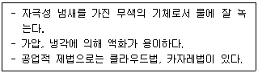
- 암모니아
- 염소
- 일산화탄소
- 황화수소
(정답률: 47%)
48. 독성가스 배관용 밸브의 압력구분을 호칭하기 위한 표시가 아닌 것은?
- Class
- S
- PN
- K
(정답률: 23%)
49. 송출 유량(Q)이 0.3m3/min, 양정(H)이 16m, 비교회전도(Ns)rk 110일 때 펌프의 회전속도(N)은 약 몇 rpm 인가?
- 1507
- 1607
- 1707
- 1807
(정답률: 30%)
50. 고압가스저장설비에서 수소와 산소가 동일한 조건에서 대기 중에 누출되었다면 확산속도는 어떻게 되겠는가?
- 수소가 산소보다 2배 빠르다.
- 수소가 산소보다 4배 빠르다.
- 수소가 산소보다 8배 빠르다.
- 수소가 산소보다 16배 빠르다.
(정답률: 36%)
51. 압축기에 사용되는 윤활유의 구비조건으로 옳은 것은?
- 인화점과 응고점이 높을 것
- 정제도가 낮아 잔류탄소가 증발해서 줄어드는 양이 많을 것
- 점도가 적당하고 항유화성이 적을 것
- 열안정성이 좋아 쉽게 열분해하지 않을 것
(정답률: 37%)
52. 액화석유가스용 용기잔류가스 회수장치의 구성이 아닌 것은?
- 열교환기
- 압축기
- 연소설비
- 질소퍼지장치
(정답률: 25%)
53. 어느 용기에 액체를 넣어 밀폐하고 압력을 가해주면 액체의 비등점은 어떻게 되는가?
- 상승한다.
- 저하한다.
- 변하지 않는다.
- 이 조건으로 알 수 없다.
(정답률: 31%)
54. 흡입밸브 압력이 0.8MPa·g 인 3안 압축기의 최종단의 토출압력은 약 몇 MPa·g인가? (단, 압축비는 3이며, 1MPa은 10kg/cm2 로 한다.)
- 16.1
- 21.6
- 24.2
- 28.7
(정답률: 29%)
55. 가스홀더의 기능에 대한 설명으로 가장 거리가 먼 것은?
- 가스수요의 시간적 변동에 대하여 제조가스량을 안정되게 공급하고 남는 가스를 저장한다.
- 정전, 배관공사 등의 공사로 가스공급의 일시 중단 시 공급량을 계속 확보한다.
- 조성이 다른 제조가스를 저장, 혼합하여 성분, 열량 등을 일정하게 한다.
- 소비지역에서 먼 곳에 설치하여 사용 피크 시 배관의 수송량을 증대한다.
(정답률: 33%)
56. LP가스 고압장치가 상용압력이 2.5MPa 일 경우, 안전밸브의 최고작동압력은?
- 2.5MPa
- 3.0MPa
- 3.75MPa
- 5.0MPa
(정답률: 32%)
57. 지하에 매설하는 배관의 이음방법으로 가장 부적합한 것은?
- 링조인트 접합
- 용접 접합
- 전기융착 접합
- 열융착 접합
(정답률: 38%)
58. 압축기에 사용하는 윤활유와 사용가스의 연결로 부적당한 것은?
- 수소 : 순광물성 기름
- 산소 : 디젤엔진유
- 아세틸렌 : 양질의 광유
- LPG : 식물성유
(정답률: 31%)
59. 배관의 전기방식 중 희생양극법의 장점이 아닌 것은?
- 전류조절이 쉽다.
- 과방식의 우려가 없다.
- 단거리의 파이프라인에는 저렴하다.
- 다른 매설금속체로의 장애(간섭)가 거의 없다.
(정답률: 20%)
60. 안전밸브의 선정절차에서 가장 먼저 검토하여야 하는 것은?
- 기타 밸브구동기 선정
- 해당 메이커의 자료 확인
- 밸브 용량계수 값 확인
- 통과 유체 확인
(정답률: 44%)
4과목: 가스안전관리
61. 액화가연성가스 접합용기를 차량에 적재하여 운반할 때 몇 kg 이상일 때 운반책임자를 동승시켜야 하는가?
- 1000kg
- 2000kg
- 3000kg
- 6000kg
(정답률: 24%)
62. 고압가스 특정제조시설의 긴급용 벤트스택 방출구는 작업원이 항시 통행하는 장소로부터 몇 m 이상 떨어진 곳에 설치하는가?
- 5m
- 10m
- 15m
- 20m
(정답률: 41%)
63. 산화에틸렌에 대한 설명으로 틀린 것은?
- 배관으로 수송할 경우에는 2중관으로 한다.
- 제독제로서 다량의 물을 비치한다.
- 저장탱크에는 45℃에서 그 내부가스의 압력이 0.4MPa 이상이 되도록 탄산가스를 충전한다.
- 용기에 충전하는 때에는 미리 그 내부가스를 아황산 등의 산으로 치환하여 안정화시킨다.
(정답률: 23%)
64. 공기보다 무거워 누출 시 체류하기 쉬운 가스가 아닌 것은?
- 산소
- 염소
- 암모니아
- 프로판
(정답률: 42%)
65. 방폭전기기기 설치에 사용되는 정션 박스(junction box), 풀 박스(pull box)는 어떤 방폭구조로 하여야 하는가?
- 압력방폭구조(p)
- 내압방폭구조(d)
- 유압방폭구조(o)
- 특수방폭구조(s)
(정답률: 43%)
66. 불소가스에 대한 설명으로 옳은 것은?
- 무색의 가스이다.
- 냄새가 없다.
- 강산화제이다.
- 물과 반응하지 않는다.
(정답률: 28%)
67. 냉동기의 제품성능의 기준으로 틀린 것은?
- 주름관을 사용한 방진조치
- 냉매설비 중 돌출부위에 대한 적절한 방호조치
- 냉매가스가 누출될 우려가 있는 부분에 대한 부식 방지 조치
- 냉매설비 중 냉매가스가 누출될 우려가 있는 곳에 차단밸브 설치
(정답률: 21%)
68. 액화석유가스자동차에 고정된 탱크 충전시설 중 저장설비는 그 외면으로부터 사업소 경계와의 거리 이상을 유지하여야 한다. 저장능력과 사업소경계와의 거리의 기준이 바르게 연결한 것은?
- 10톤 이하 - 20m
- 10톤 초과 20톤 이하 - 22m
- 20톤 초과 30톤 이하 - 30m
- 30톤 초과 40톤 이하 – 32m
(정답률: 28%)
69. 고압가스 일반제조시설에서 긴급차단장치를 반드시 설치하지 않아도 되는 설비는?
- 염소가스 정체량이 40톤인 고압가스 설비
- 연소열량이 5×107인 고압가스 설비
- 특수 반응설비
- 산소가스 정체량이 150톤인 고압가스 설비
(정답률: 25%)
70. 탱크주밸브, 긴급차단장치에 속하는 밸브 그 밖의 중요한 부속품이 돌출된 저장탱크는 그 부속품을 차량의 좌측면이 아닌 곳에 설치한 단단한 조작상자 내에 설치한다. 이 경우 조작상자와 차량의 뒷범퍼와의 수평거리는 얼마 이상 이격하여야 하는가?
- 20cm
- 30cm
- 40cm
- 50cm
(정답률: 27%)
71. 긴급이송설비에 부속된 처리설비는 이송되는 설비 내의 내용물을 안전하게 처리하여야 한다. 처리방법으로 옳은 것은?
- 플레어스택에서 배출시킨다.
- 안전한 장소에 설치되어 있는 저장탱크에 임시 이송한다.
- 밴트스택에서 연소시킨다.
- 독성가스는 제독 후 사용한다.
(정답률: 30%)
72. 고압가스 냉동기 제조의 시설에서 냉매가스가 통하는 부분의 설계압력 설정에 대한 설명으로 틀린 것은?
- 보통의 운전상태에서 응축온도가 65℃를 초과하는 냉동설비는 그 응축온도에 대한 포화증기 압력을 그 냉동설비의 고압부 설계압력으로 한다.
- 냉매설비의 저압부가 항상 저온으로 유지되고 또한 냉매가스의 압력이 0.4MPa 이하인 경우에는 그 저압부의 설계압력을 0.8MPa로 할 수 있다.
- 보통의 상태에서 내부가 대기압 이하로 되는 부분에는 압력이 0.1MPa을 외압으로 하여 걸리는 설계압력으로 한다.
- 냉매설비의 주위온도가 항상 40℃를 초과하는 냉매설비 등의 저압부 설계압력은 그 주위 온도의 최고온도에서의 냉매가스의 평균압력 이상으로 한다.
(정답률: 23%)
73. 충전용기 적재에 관한 기준으로 옳은 것은?
- 충전용기를 적재한 차량은 제1종 보호시설과 15m 이상 떨어진 곳에 주차하여야 한다.
- 충전량이 15kg 이하이고 적재수가 2개를 초과하지 아니한 LPG는 이륜차에 적재하여 운반할 수 있다.
- 용량 15kg의 LPG 충전용기는 2단으로 적재하여 운반할 수 있다.
- 운반차량 뒷면에는 두께가 3mm이상, 폭 50mm 이상의 범퍼를 설치한다.
(정답률: 25%)
74. 가스보일러에 의한 가스 사고를 예방하기 위한 방법이 아닌 것은?
- 가스보일러는 전용보일러실에 설치한다.
- 가스보일러의 배기통은 한국가스안전공사의 성능인증을 받은 것을 사용한다.
- 가스보일러는 가스보일러 시공자가 설치한다.
- 가스보일러의 배기톱은 풍압대 내에 설치한다.
(정답률: 44%)
75. 고압가스 용기 및 차량에 고정된 탱크 충전시설에 설치하는 제독설비의 기준으로 틀린 것은?
- 가압식, 동력식 등에 따라 작동하는 수도직결식의 제독제 살포장치 또는 살수장치를 설치한다.
- 물(중화제)인 중화조를 주위온도가 4℃ 미만인 동결 우려가 있는 장소에 설치 시 동결방지장치를 설치한다.
- 물(중화제) 중화조에는 자동급수장치를 설치한다.
- 살수장치는 정전 등에 의해 전자밸브가 작동하지 않을 경우에 대비하여 수동 바이패스 배관을 추가로 설치한다.
(정답률: 19%)
76. 액화가스 충전용기의 내용적을 V(L), 저장능력을 W(kg), 가스의 종류에 따르는 정수를 C로 했을 때 이에 대한 설명으로 틀린 것은?
- 프로판의 C값은 2.35이다.
- 액화가스와 압축가스가 섞여 있을 경우에는 액화가스 10kg을 1m3 으로 본다.
- 용기의 어깨에 C값이 각인되어 있다.
- 열대지방과 한 대지방의 C값은 다를 수 있다.
(정답률: 23%)
77. 일반도시가스사업 예비 정압기에 설치되는 긴급차단장치의 설정압력은?
- 3.2kPa 이하
- 3.6kPa 이하
- 4.0kPa 이하
- 4.4kPa 이하
(정답률: 16%)
78. 소형저장탱크에 의한 액화석유가스 사용시설에서 벌크로리 측의 호스어셈블리에 의한 충전 시 충전작업자는 길이 몇 m 이상의 충전호스를 사용하여 충전하는 경우에 별도의 충전보조원에게 충전작업 중 충전호스를 감시하게 하여야 하는가?
- 5m
- 8m
- 10m
- 20m
(정답률: 32%)
79. 가스 제조 시 첨가하는 냄새가 나는 물질(부취제)에 대한 설명으로 옳지 않은 것은?
- 독성이 없을 것
- 극히 낮은 농도에서도 냄새가 확인될 수 있을 것
- 가스관이나 Gas meter에 흡착될 수 있을 것
- 배관 내의 상용온도에서 응축하지 않고 배관을 부식시키지 않을 것
(정답률: 46%)
80. 다음 보기에서 가스용 퀵카플러에 대한 설명으로 옳은 것으로 모두 나열된 것은?
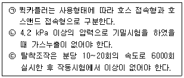
- ㉠
- ㉠, ㉡
- ㉡, ㉢
- ㉠, ㉡, ㉢
(정답률: 27%)
5과목: 가스계측기기
81. 대기압이 750mmHg일 때 탱크 내의 기체압력이 게이지압으로 1.98kg/cm2 이었다. 탱크 내 기체의 절대압력은 약 몇 kg/cm2 인가? (단, 1기압은 1.0336 kg/cm2 이다._
- 1
- 2
- 3
- 4
(정답률: 32%)
82. 질소용 mass flow controller에 헬륨을 사용하였다. 예측 가능한 결과는?
- 질량유량에는 변화가 있으나 부피 유량에는 변화가 없다.
- 지시계는 변화가 없으나 부피유량은 증가한다.
- 입구압력을 약간 낮춰주면 동일한 유량을 얻을 수 있다.
- 변화를 예측할 수 없다.
(정답률: 27%)
83. 측정방법에 따른 액면계의 분류 중 간접법이 아닌 것은?
- 음향을 이용하는 방법
- 방사선을 이용하는 방법
- 압력계, 차압계를 이용하는 방법
- 플로트에 의한 방법
(정답률: 26%)
84. 가스시료 분석에 널리 사용되는 기체 크로마토그래피(Gas Chromatography)의 원리는?
- 이온화
- 흡착 치환
- 확산 유출
- 열전도
(정답률: 23%)
85. 60°F에서 100°F까지 온도를 제어하는데 비례제어기가 사용된다. 측정온도가 71°F에서 75°F로 변할 때 출력압력이 3psi에서 5psi까지 도달하도록 조정된다. 비례대(%)은?
- 5%
- 10%
- 15%
- 20%
(정답률: 25%)
86. 계량의 기준이 되는 기본단위가 아닌 것은?
- 길이
- 온도
- 면적
- 광도
(정답률: 38%)
87. 기체 크로마토그래피의 구성이 아닌 것은?
- 캐리어 가스
- 검출기
- 분광기
- 컬럼
(정답률: 42%)
88. 적외선 가스분석계로 분석하기가 가장 어려운 가스는?
- H2O
- N2
- HF
- CO
(정답률: 45%)
89. 용적식 유량계에 해당되지 않는 것은?
- 로터미터
- Oval식 유량계
- 루트 유량계
- 로터리 피스톤식 유량계
(정답률: 29%)
90. 시정수(time constant)가 5초인 1차 지연형 계측기의 스텝 응답(step response)에서 전변화의 95%까지 변화하는데 걸리는 시간은?
- 10초
- 15초
- 20초
- 30초
(정답률: 25%)
91. 가연성 검출기로 주로 사용되지 않는 것은?
- 중화적정형
- 안전등형
- 간섭계형
- 열선형
(정답률: 15%)
92. 다음 보기에서 설명하는 가스미터는?
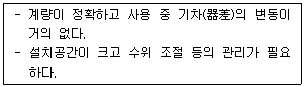
- 막식가스미터
- 습식가스미터
- 루트(Roots)미터
- 벤투리미터
(정답률: 43%)
93. 열전대 온도계 중 측정범위가 가장 넓은 것은?
- 백금-백금·로듐
- 구리-콘스탄탄
- 철-콘스탄탄
- 크로멜-알루멜
(정답률: 45%)
94. 연소가스 중 CO와 H2의 분석에 사용되는 가스분석계는?
- 탄산가스계
- 질소가스계
- 미연소가스계
- 수소가스계
(정답률: 27%)
95. 최대 유량이 10m3/h 이하인 가스미터의 검정·재검정 유효기간으로 옳은 것은?
- 3년, 3년
- 3년, 5년
- 5년, 3년
- 5년, 5년
(정답률: 21%)
96. 방사선식 액면계에 대한 설명으로 틀린 것은?
- 방사선원은 코발트 60(60Co)이 사용된다.
- 종류로는 조사식, 투과식, 가반식이 있다.
- 방사선 선원을 탱크 상부에 설치한다.
- 고온, 고압 또는 내부에 측정자를 넣을 수 없는 경우에 사용된다.
(정답률: 30%)
97. 저압용의 부르동관 압력계 재질로 옳은 것은?
- 니켈강
- 특수강
- 인발강관
- 황동
(정답률: 24%)
98. 게겔법에서 C3H6를 분석하기 위한 흡수액으로 사용되는 것은?
- 33% KOH 용액
- 알칼리성 피로갈롤 용액
- 암모니아성 염화 제1구리 용액
- 87% H2SO4
(정답률: 40%)
99. 제어동작에 대한 설명으로 옳은 것은?
- 비례동작은 제어오차가 변화하는 속도에 비례하는 동작이다.
- 미분동작은 편차에 비례한다.
- 적분동작은 오프셋을 제거할 수 있다.
- 미분동작은 오버슈트가 많고 응답이 느리다.
(정답률: 28%)
100. 루트식 가스미터는 적은 유량 시 작동하지 않을 우려가 있는데 보통 얼마 이하일 때 이러한 현상이 나타나는가?
- 0.5m3/h
- 2m3/h
- 5m3/h
- 10m3/h
(정답률: 30%)
속도가 증가하면, 유체 입자들이 더욱 불규칙하게 움직이고 충돌하는 빈도가 증가하게 됩니다. 따라서, 속도가 증가할수록 수두손실이 증가하게 되며, 이는 속도의 제곱에 비례합니다.
따라서, 정답은 "대략적으로 속도의 제곱에 비례한다." 입니다.